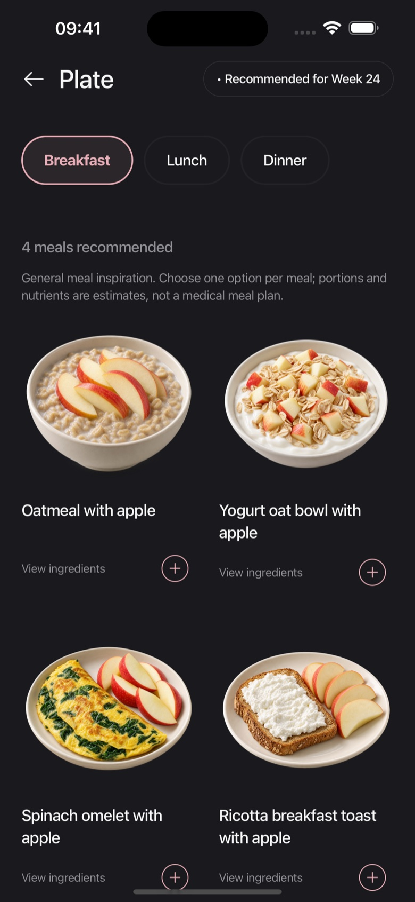

A useful pregnancy meal plan gives you options, not another standard to live up to. Start with a few familiar breakfasts, lunches, and dinners, vary ingredients over the week, and leave room to change your mind. Your clinician or dietitian should guide any specific nutritional needs, supplements, or restrictions; a general meal app does not replace that plan.
Explore Embryly ↗
Embryly matches meal ideas to your saved preferences and
pregnancy week, so there is a place to start.

Plan around variety, not a perfect day.
The NHS pregnancy nutrition guide encourages a variety of foods rather than a special restrictive diet, and says balance can be considered over a week rather than achieved at every meal. It also explains that supplements remain important; food ideas are not a replacement for prescribed or recommended supplements.
For planning, give yourself a small pool of choices. Two or three breakfasts, a few lunches, and several dinners can be easier to use than a rigid seven day schedule. That is an organizing method, not a prescribed portion count or an instruction about how often you should eat.
Build a short list for each part of the day.
Breakfast: make the first decision smaller.
You might keep oats, a pasteurized yogurt option, or thoroughly cooked eggs in your list if they fit your needs. Add ingredients you enjoy and can tolerate. A familiar option is useful on a rushed morning. The purpose is to reduce the decision, not to prove that one breakfast meets every nutritional requirement.
Lunch: choose something practical.
A freshly prepared bean and grain bowl, a cooked vegetable dish, or a safely reheated meal can be a starting point. Consider where you will eat and whether you have refrigeration or reheating available. Keep ingredients you avoid out of the plan, and do not assume a similar looking store bought dish uses the same recipe.
Dinner: change one element at a time.
If you like a particular meal format, try a different vegetable, protein, or grain rather than learning an entirely new recipe every evening. Check the preparation instructions each time, especially if swapping a plant ingredient for poultry or fish. The new ingredient may need a different cooking process.
Keep safety part of the routine.
Planning ahead only helps if food is handled appropriately. Follow CDC guidance on cleaning, separating, cooking, and chilling. Labeling a container with the date you made it can help you remember its history; it does not extend its storage life. Check official storage guidance for the actual dish.
US guidance recommends eggs cooked until whites and yolks are firm and pasteurized milk products, while other foods need their own checks. The CDC pregnancy food table is a helpful reference. Local rules can differ, so follow your care team and the public health guidance where you live.
Let preferences change.
A food you enjoyed last week may be less appealing today. In Embryly, updated profile preferences inform future catalog matches. You can use that flexibility without treating a recommendation as a medical instruction. A setting for lower carbohydrate choices ranks relative options; it does not prescribe a carbohydrate target. Halal or kosher preferences do not certify sourcing or preparation.
For allergies, read the actual package and ask about cross contact. For gestational diabetes, anemia, celiac disease, or other conditions, ask a qualified professional for an individualized plan. A filter can exclude known tags, but it cannot establish that a recipe or commercial product meets your clinical needs.
Use the plan as a starting point.
Open a meal idea, check the ingredient list, and consider what works for your day. Choose among the options rather than assuming you should eat every recommendation. Estimated nutrients are not a complete record of your intake, and displayed meals are not guaranteed to cover all your daily requirements.

It is also fine to make a note of what did not work. Perhaps a dish required more preparation than you had time for, or an ingredient was difficult to find. Those observations are useful for your next shopping list. If persistent nausea, vomiting, or difficulty eating or drinking is affecting your intake, contact your care team instead of trying to solve it through meal selection alone.
For the “is this safe?” part of the decision, read our pregnancy food safety guide. For how the app’s matching works, visit Sources & Accuracy.
A note on individual needs
This is an
organizational approach to general meal inspiration, not a medical
diet or supplement plan. Embryly Editorial Team; references
checked September 26, 2026. No clinical review is claimed.